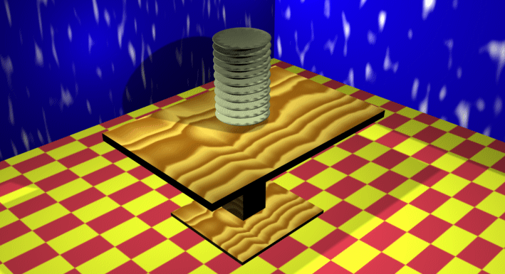
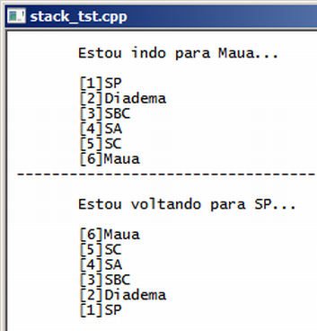

Curso completo de linguagem C++
Gameprog - Escola de programação de jogos digitais
Contato: gameprog.br@gmail.com
track24.html
24. Pilha simples - stack
24.1 Visão geral

A pilha simples, implementada pela classe genérica stack, é uma estrutura de
dados com semelhança a uma pilha de pratos de um restaurante do mundo real.
O último prato que entra na pilha é o primeiro a ser lavado porque é o mais
fácil de ser retirado. O último dado da pilha é o primeiro a ser processado.
É comum o uso da pilha para implementar o recurso de desfazer (undo) dos
programas. O último ato executado é o primeiro a ser desfeito, vindo o
penúltimo na sequência e assim sucessivamente ao reverso.
Outro uso para a pilha, em um videogame, consiste em mapear na pilha um
caminho que está sendo verificado, na ocorrência de um caminho desfavorável,
o processo retorna para o último ponto verificado, podendo a partir desse
último ponto verificar outras alternativas do caminho sendo mapeado.
Veja nosso programa exemplo que simula um trajeto São Paulo - Mauá:

// stack_tst.cpp
// Este programa ilustra o uso da pilha
#include <iostream>
#include <string>
#include <stack>
using namespace std;
int main() {
system("color f0"); system("title stack_tst.cpp"); cout << endl;
// Declarando a pilha
stack<string> pilha;
// Nossso caminho SP - Maua e vice-versa
string caminho[6];
caminho[0] = "[1]SP ";
caminho[1] = "[2]Diadema";
caminho[2] = "[3]SBC ";
caminho[3] = "[4]SA ";
caminho[4] = "[5]SC ";
caminho[5] = "[6]Maua";
// Colocando dados na pilha...
cout << "\tEstou indo para Maua..." << endl;
for (int ncx=0; ncx < 6; ncx++) {
cout << "\n\t";
cout << caminho[ncx];
pilha.push ( caminho[ncx] );
} // end for
cout << "\n -------------------------------------------------";
cout << endl << endl;
// Mostrando e retirando dados da pilha...
cout << "\tEstou voltando para SP..." << endl;
for (int ncx=0; ncx < 6; ncx++) {
cout << "\n\t";
cout << pilha.top();
pilha.pop();
} // endfor
cout << endl; cout << endl;
system("pause");
} // endfunction: main()
Declarando a pilha
#include <stack>
// Declarando a pilha
stack<string> pilha;
O fragmento de código acima ilustra como você deve declarar a pilha depois
que você incluiu o arquivo <stack> no seu programa.
Colocando dados na pilha
Os dados são adicionados na pilha através do método .push ( elemento ):
pilha.push ( caminho[ncx] );
Mostrando os dados da pilha
O método .top() retorna uma referência do elemento do topo da pilha:
cout << pilha.top();
Deletando dados da pilha
pilha.pop();
O método .pop() exclui o dado do topo da pilha, promovendo o elemento anterior
ao topo.